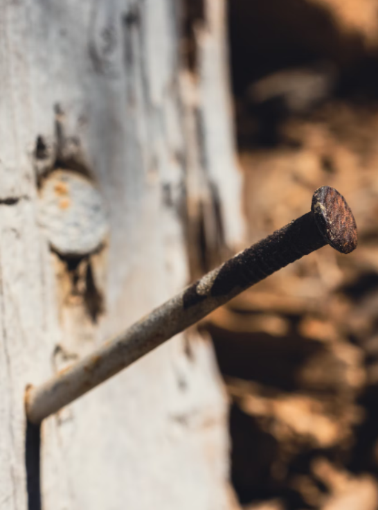
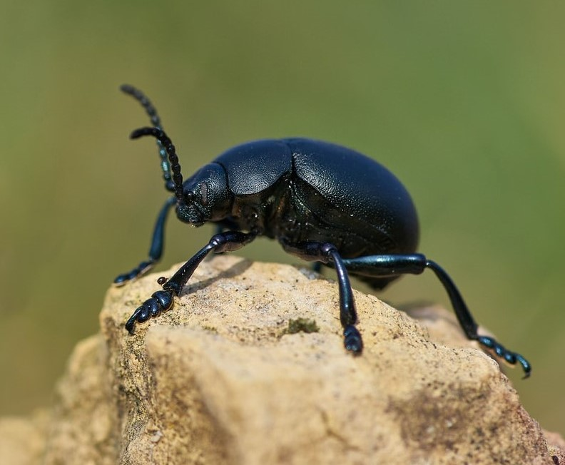

The game in short
Hollow Knight is a 2D-Platformer adventure game, described to be pretty difficult. It's presented in a hand-drawn style.
The game is about a ruined kingdom deep underground. The kingdom is inhabited by bugs that went insane because of some infection.
The player is a small bug knight with only a rusty nail to defend himself. He is refered to as "The Knight" and called a ghost by some characters, because he wears a cloak and a white mask.
Throughout the game, the player collects various upgrades and abilities. Normally, the player can go wherever they wants, but is sometimes stopped by his lack of movement abilities.
There are many areas with unique enemies and bossfights, which I find really cool.
Image: A rusty nail, representing the weapon of the knight.
The world
In Hollow Knight, the player can feel what happened in his surroundings through the world design. It is one of the, if not the best crafted worlds i have seen in any videogame.
The ambient sounds and music only strengthen my opinion. They fit perfectly into the different areas. From the "surface" of the kingdom with some calm and slow music
to the abandoned outskirts with sad and discouraging tunes, the deepest tunnels with creepy ambient noises and the epic boss fights with exciting and fast orchestra music.
To play the game, the player doesn't need to understand the story and probably isn't expected to do so. The lore is very cryptic and confusing because most of it is told through the environment.
When some parts are told in text, they are written in poems or symbolic meaning.

The fights
Like I already said, the boss fights have amazing music, but that's not all. The areas they are in, the arenas are well designed and fit the theme of the bosses,
the moves and attacks are nicely animated and are impressively elegant, yet still strong. There is also two areas that are specifically designed for fighting,
a colosseum, where multiple waves of enemies spawn and all of them have to be defeated, and a pantheon, where the player can challenge already defeated bosses and later even start a bossrush.
Image: A dung beetle, a character in the game is based on it.
All in all
All of these aspects combined make the game one of the best experiences i've had. It's definitely the best 2D-Platformer i have played and will probably stay in that spot for a long time.
It is also in my top 5 Games of all Time, right up there with Minecraft, Terraria and a newer title, Elden Ring. A Sequel was announced back in 2019, which is still in the works.
Recently, at an XBox Presentation, it was announced to release in the next 12 Months. I am already excited to play that one.